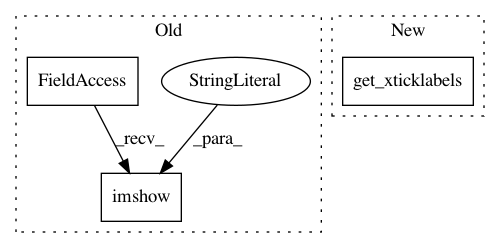

60e9ec01c86b3060f6bffd4802502d31029d9b9b,examples/axes_grid1/inset_locator_demo2.py,,,#,23
Before Change
Z2[30:30 + ny, 30:30 + nx] = Z
// extent = [-3, 4, -4, 3]
ax.imshow(Z2, extent=extent, interpolation="nearest",
origin="lower")
axins = zoomed_inset_axes(ax, zoom=6, loc="upper right")
axins.imshow(Z2, extent=extent, interpolation="nearest",
origin="lower")
After Change
axins.yaxis.get_major_locator().set_params(nbins=7)
axins.xaxis.get_major_locator().set_params(nbins=7)
plt.setp(axins.get_xticklabels(), visible=False)
plt.setp(axins.get_yticklabels(), visible=False)
In pattern: SUPERPATTERN
Frequency: 3
Non-data size: 3
Instances
Project Name: matplotlib/matplotlib
Commit Name: 60e9ec01c86b3060f6bffd4802502d31029d9b9b
Time: 2018-05-16
Author: elch.rz@ruetz-online.de
File Name: examples/axes_grid1/inset_locator_demo2.py
Class Name:
Method Name:
Project Name: matplotlib/matplotlib
Commit Name: 55bab51c4b43d50ea6fc52cb752877a6df618ce2
Time: 2018-08-04
Author: jklymak@gmail.com
File Name: examples/axes_grid1/inset_locator_demo2.py
Class Name:
Method Name:
Project Name: ScottfreeLLC/AlphaPy
Commit Name: 7a7d0e7b35cbee6b3409ac30ff4bf4edfe525af2
Time: 2019-11-17
Author: Mark.R.Conway@gmail.com
File Name: alphapy/plots.py
Class Name:
Method Name: plot_confusion_matrix